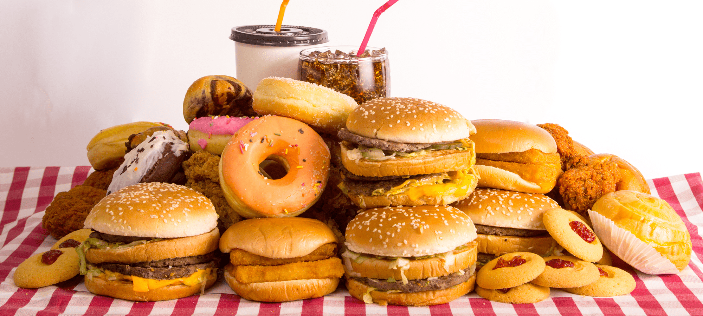

Our story began with Toluwalase, a passionate chef dedicated to sharing her sweet creations with the world. With a dash of creativity, Lase's Cravings was born. We use only the freshest ingredient, carefully selected to ensure the highest quality. From classic treats to innovative delights. Every cravings is crafted with love, care, and a dash of magic.
At Lase’s Cravings, our mission is to delight our customers with an irresistible range of snacks and treats that cater to every craving. We are dedicated to quality, innovation, and exceptional customer service, ensuring that every experience with us is memorable and satisfying.
Our vision is to be the go-to destination for anyone seeking the ultimate indulgence, transforming cravings into moments of pure delight. We aspire to innovate continuously, offering a diverse range of high-quality treats that not only satisfy but also inspire joy and satisfaction. By creating memorable experiences and setting new standards in flavor and quality, we aim to enrich lives and become a cherished part of everyday moments.
